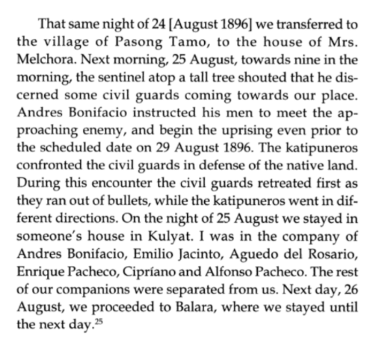
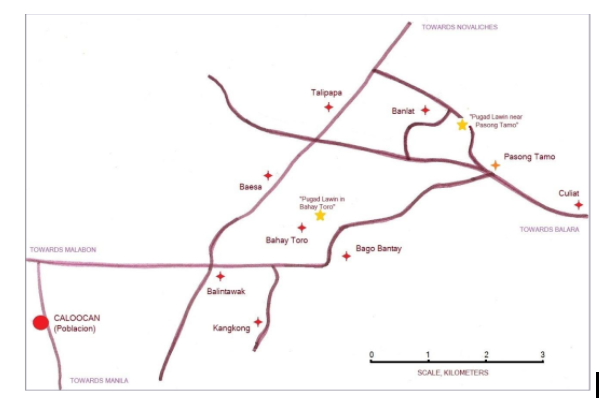

The Statements & Accounts
Several notable figures have contributed to the differences of the details on "the Cry"
Pio Valenzuela

“Cry of Pugad Lawin”
Pio Valenzuela was a friend of both Jose Rizal and Andres Bonifacio and was one of the original members of Bonifacio’s Katipunan. He was responsible for establishing factions of the secret society in different parts of Morong or Rizal Province and Bulacan. In addition, the Katipunan Publication, Kalayaan was also his initiative. In his old age, he retired from politics and wrote his memoirs.
He was an eyewitness of the event but his version was controversial because he changed his first statement. He first said, the cry occured in Balintawak last August 26, 1896. However, he wrote in his memoir later on after his first statement that the cry actually happened in Pugad Lawin, August 23, 1896.
Pio Valenzuela along with Briccio Pantas and Cipriano Pacheco made public a signed statement that Unang Sigaw took place on an earlier date and in a different place called “Pugad Lawin” on 23 August 1896. This version radically contradicts his earlier versions of the events, which are on record. Moreover, the switch to “Pugad Lawin” was made by Valenzuela after having attended celebrations of the Cry of Balintawak earlier years ( “The Cry of of Balintawak” 8)
The Valenzuela 1896 Statements
The 1896 court declarations are considered for the most part to be more credible, since numerous statements contained therein are corroborated by other sources. The documents state how Valenzuela testified on a variety of subjects related to his involvement in the Katipunan, like how and why he joined the society, its goals, its leadership and membership, etc.
His testimony says that he was in the company of Bonifacio and others in a house in Balintawak on 23, 24 and 27 August 1896, prior to the attack of the civil guards, are confirmed by Masangkay and Vicente Samson. Some of the statements might also have been aimed directly at saving himself from the fate suffered by many captured Katipuneros, example of which are his derogatory comments about Bonifacio, his disapproval of planned uprising that led to his escape and surrender to the authorities. Altogether, these declarations before the Spanish court have a persuasive logical thrust-from the Valenzuela claim that he meant to proceed to his hometown at the outset of his separation from the Bonifacio group in Balintawak-which give the reader the impression that Valenzuela was indeed a reluctant revolutionary. After being made aware of the consequences of making false declarations referring to the date of the attack of the civil guards in balintawak, he changed the date from 25 to 26 August 1896 and the details of his flight from that place on the twenty-fifth of that month. Since his 1896 court statements after the revolution were damaging credibility, Valenzuela tried to nullify them by alleging these were made “under duress”. His later statements - albeit in modified form - repeat his earlier claim, that he had left Balintawak sometime around 25 August 1896 and narrated an altered story:
Guillermo Masangkay
![]()
"Cry of Balintawak"
Guillermo Masangkay was a close friend and adviser of Andres Bonifacio. In Guillermo Masangkay’s account, the “Cry” took place in Balintawak on August 26, 1896. A meeting was held at the house of Apolonio Samson, a cabeza of barrio Balintawak in Caloocan. Leaders of the Katipunan and boards of directors of the organization were present such as Andres Bonifacio, Emilio Jacinto, Aguedo del Rosario, Tomas Remigio, Briccio Pantas, Teodoro Plata, Pio Valenzuela, Enrique Pacheco, and Francisco Carreon.
At about 9 o’clock in the morning of the same date, the meeting was opened and presided over by Andres Bonifacio while Emilio Jacinto acted as secretary. Plata, Pantas, and Valenzuela were opposed to starting the revolution too early. Bonifacio left the session hall to talk to the people. He told them that the leaders were arguing about the said concern but he appealed to them with a fiery speech, making the people shout “Revolt!” as the final decision. Bonifacio then told them to destroy their cedulas, as they were the sign of slavery of the Filipinos from the Spaniards. He told them it was the sign declaring their severance from their oppressors.
Gregoria de Jesus

“the First Cry”
Gregoria de Jesus is the wife of Andres Bonifacio and is the Mother of Philippine Revolution. She also played an important role in the Philippines’ struggle for independence as the Lakambini of the Katipunan. She took on the duty of keeping the Katipunan’s documents safe. She also sewed the first flag of the Katipunan alongside Benita Javier.
The Katipunan would eventually be exposed when Teodoro Patiño revealed the society’s existence to colonial authorities, forcing the revolutionary organization to act. Spanish authorities were quick to crack down on the Katipunan, and many were arrested or executed for their links to the organization, whether real or imagined. Bonifacio and Oriang went on the run. Bonifacio left Manila quickly, eventually resurfacing to lead the Cry of Balintawak. Oriang, in the meantime, was left with her parents in Caloocan (Umali, 2021).
After the Revolution in August 1896, she lived with her parents in Caloocan and when she was informed that the Spanish authorities wanted to arrest her, she fled to Manila and reunited with her husband. In order for her to remember the events that took place during her life. In 1932, Gregoria published "Mga Tala ng Aking Buhay," a book that chronicles the events of the Katipunan's revolution against the Spanish authorities.
According to Gregoria, the first cry of revolution happened near Caloocan on August 25, 1896. The activities of the Katipunan nearly all comers of the Philippine Archipelago, so that when its existence was discovered and some of the members are arrested, they can immediately return to Caloocan (Villaruel, n.d.). In her version of the first cry, Bonifacio and his men were gathered in the hills of Balintawak for the war of Liberation.
After Bonifacio’s death, she later on married Julio Nakpil. Just like Gregoria’s statement, Nakpil also said that “the Cry” happened in Balintawak but a day earlier (August 24, 1896) than de Jesus’ statement.
Santiago Alvarez

"Non-Witness"
Unlike the other versions, Santiago Alvarez is not an eyewitness of the event but he is a well-known Katipunero from Cavite. He is a relative of Gregoria de Jesus, the wife of Andres Bonifacio. His account was not given of equal value due to the fact that he was not an eyewitness.
According to Santiago, the Katipuneros met at the barn of Kabesang Melchora Aquino at a place called Sampalukan, the barrio of Bahay Toro (Pugad Lawin). About 500 came to join Andres Bonifacio and his men on August 23, 1896. The next day, August 24 which he believed was the first “Cry”, about 1000 Katipuneros had their meeting in the same barn which began at 10 o’clock in the morning, still led by “Supremo” Andres Bonifacio. The meeting adjourned by 12 o’clock noon in the middle of the loud cries of “Long live the Sons of the Country” (Mabuhay ang mga Anak ng Bayan!).
The Guardia Civil’s report on the “Cry of Balintawak”
![]()
"The Report"
According to the Spanish Commander of the Guardia Civil Veterana of Manila, Captain Oligario Diaz who investigated the discovery of the Katipunan, Bonifacio moved to the barrio of Balintawak with 200 men from Caloocan on the 23rd of August 1896. The following day, August 24th, they were attacked by the Guardia Civil in the outskirts of the said town and then retreated to their hiding places.
Interpretation
Based on these statements, it’s safe to say that the interpretation of the “Cry” as pagpupunit and unang labanan is considered void, leaving us to the interpretation that the “Cry” meant pasya or the decision to revolt. Also with these accounts, it can be said that the “Cry” may have actually happened in Balintawak where the 1911 monument was erected.
Return to Homepage